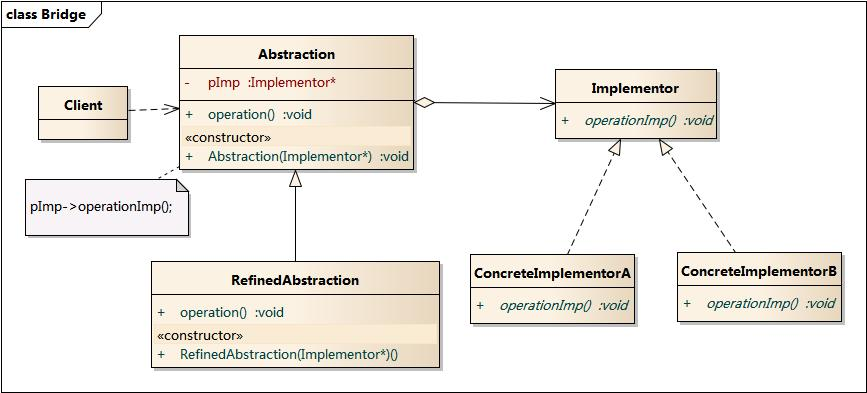

简要：开发中，有些知识我们只需学一次，在实际生产中又能得到频繁的使用。如果淡忘了，很容易能找回来，那就不需要记忆。比如Android的某个调用通知的API。还有一些知识，必须时刻记在脑子里，才有可能被用到。一旦淡忘了，就会越来越远离我们，并且实际的编码过程中也很难唤起记忆，那就需要我们经常复习。比如，设计模式。
适配器模式
最直观的理解就是：中英式转换插头。
桥接模式
一个简单的例子：
理解桥接模式，重点需要理解如何将抽象化(Abstraction)与实现化(Implementation)脱耦，使得二者可以独立地变化。
- 你不希望在抽象和它的实现部分之间有一个固定的绑定关系。例如这种情况可能是因为，在程序运行时刻实现部分应可以被选择或者切换。
- 一个类存在两个独立变化的维度，且这两个维度都需要进行扩展。虽然在系统中使用继承是没有问题的，但是由于抽象化角色和具体化角色需要独立变化，设计要求需要独立管理这两者。
- 对于那些不希望使用继承或因为多层次继承导致系统类的个数急剧增加的系统，桥接模式尤为适用。
模型图：

举个栗子
比如一个动物IAnimal, 有移动,呼吸,吃东西,繁殖四种行为.我们把这几种行为都抽象出来, 变成IMovable,IBreathable,IEatable,IBreedable. 上面的四个接口, 每个接口都有若干种实现方式, 比如IMovable有Swamable,Runnable,Fliable三种实现方式. 这样, 我们定义或者说添加一种新动物AnimalNew的时候, 只需把对应的行为方式组装到AnimalNew中即可.
深刻体会过的例子是游戏的背包系统. 背包中每个物品有交易(买卖),穿戴(佩戴),损耗(随着某个变量而效果减少),作用(属性加成),生成tips…等行为
组合模式
将对象组合成树形结构以表示“部分-整体”的层次结构。Composite使得用户对单个对象和组合对象的使用具有一致性。
最典型的例子是UI系统的树形结构。
装饰模式
一般有两种方式可以实现给一个类或对象增加行为：
- 继承机制，使用继承机制是给现有类添加功能的一种有效途径，通过继承一个现有类可以使得子类在拥有自身方法的同时还拥有父类的方法。但是这种方法是静态的，用户不能控制增加行为的方式和时机。
- 关联机制，即将一个类的对象嵌入另一个对象中，由另一个对象来决定是否调用嵌入对象的行为以便扩展自己的行为，我们称这个嵌入的对象为装饰器(Decorator)

最常见的例子：
外观模式
- 外观模式要求一个子系统的外部与其内部的通信通过一个统一的外观对象进行，外观类将客户端与子系统的内部复杂性分隔开，使得客户端只需要与外观对象打交道，而不需要与子系统内部的很多对象打交道。
- 当要为一个复杂子系统提供一个简单接口时可以使用外观模式。该接口可以满足大多数用户的需求，而且用户也可以越过外观类直接访问子系统。
- 客户程序与多个子系统之间存在很大的依赖性。引入外观类将子系统与客户以及其他子系统解耦，可以提高子系统的独立性和可移植性。

直观的例子：
享元模式
最典型的例子，文字渲染程序：

在以下情况下可以使用享元模式：
- 一个系统有大量相同或者相似的对象，由于这类对象的大量使用，造成内存的大量耗费。
- 对象的大部分状态都可以外部化，可以将这些外部状态传入对象中。
- 使用享元模式需要维护一个存储享元对象的享元池，而这需要耗费资源，因此，应当在多次重复使用享元对象时才值得使用享元模式。
- 并非所有的Flyweight子类都需要被共享。Flyweight接口使共享成为可能，但它并不强制共享。在Flyweight对象结构的某些层次，UnsharedConcreteFlyweight对象通常将ConcreteFlyweight对象作为子节点(Row和Column就是这样)。

代理模式
- 为其它对象提供一种代理以控制对这个对象的访问。对一个对象进行访问控制的一个原因是为了只有在我们确实需要这个对象时才对他进行创建和初始化。
- 一些常见的可以使用Proxy模式的情况：
- 远程代理：为一个对象在不同的地址空间提供局部代表。
- 虚代理：根据需要创建开销很大的对象。
- 保护代理：控制对原始对象的访问。
- 智能指引：取代了简单的指针，他在访问对象时执行了一些附加的操作。

一些区分
- Facade定义一个新的借口，而Adapter则复用一个原有的接口，让之前的两个接口能协同工作。
- Decorator旨在不需要生成子类即可以给对象添加职责。这样就避免了静态实现所有功能组合，从而导致子类急剧增加。
- Proxy的设计目的是，当直接访问一个实体不方便或者不符合需求时，为这个尸体提供一个替代者。